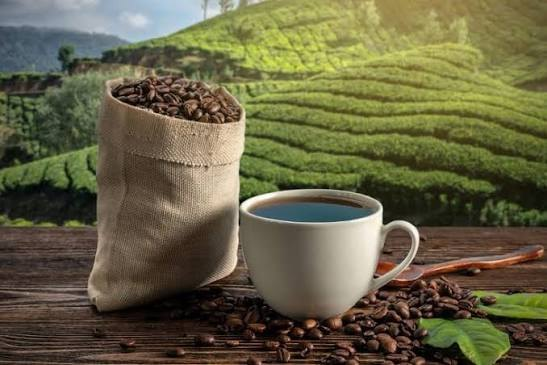
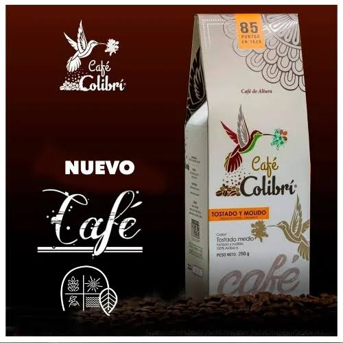
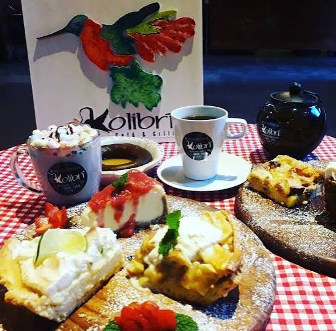
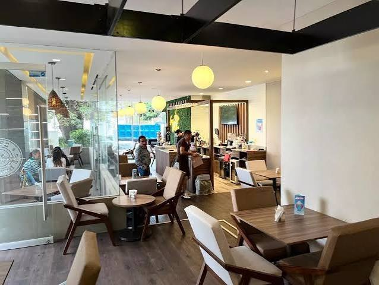

Café de altura
Granos seleccionados de fincas hondureñas, tostados con cuidado.
Café de nuestras montañas, hecho con cariño
Ver el menú VisítanosUn rincón acogedor donde cada taza cuenta la historia de los productores hondureños. Preparamos café de altura, repostería casera y desayunos típicos todos los días.
Conoce nuestra historia

Granos seleccionados de fincas hondureñas, tostados con cuidado.

Pasteles, pan dulce y postres hechos cada mañana.

Un lugar para estudiar, trabajar o reunirte con los tuyos.
Lunes a sábado: 7:00 a. m. a 8:00 p. m.
Domingo: 8:00 a. m. a 4:00 p. m.